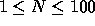

| Unix ls |
The computer company you work for is introducing a brand new computer line and is developing a new Unix-like operating system to be introduced along with the new computer. Your assignment is to write the formatter for the ls function.
Your program will eventually read input from a pipe (although for now your program will read from the input file). Input to your program will consist of a list of (F) filenames that you will sort (ascending based on the ASCII character values) and format into (C) columns based on the length (L) of the longest filename. Filenames will be between 1 and 60 (inclusive) characters in length and will be formatted into left-justified columns. The rightmost column will be the width of the longest filename and all other columns will be the width of the longest filename plus 2. There will be as many columns as will fit in 60 characters. Your program should use as few rows (R) as possible with rows being filled to capacity from left to right.
The input file will contain an indefinite number of lists of filenames.
Each list will begin with a line containing a single integer
(  ).
There will then be N lines each containing one left-justified
filename and the entire line's contents (between 1 and 60 characters)
are considered to be part of the filename. Allowable characters are
alphanumeric (a to z, A to Z, and 0 to 9) and from the following
set { ._- } (not including the curly braces). There will be no illegal
characters in any of the filenames and no line will be completely
empty.
Immediately following the last filename will be the N for the next set or the end of file. You should read and format all sets in the input file.
For each set of filenames you should print a line of exactly 60 dashes (-) followed by the formatted columns of filenames. The sorted filenames 1 to R will be listed down column 1; filenames R+1 to 2R listed down column 2; etc.
10 tiny 2short4me very_long_file_name shorter size-1 size2 size3 much_longer_name 12345678.123 mid_size_name 12 Weaser Alfalfa Stimey Buckwheat Porky Joe Darla Cotton Butch Froggy Mrs_Crabapple P.D. 19 Mr._French Jody Buffy Sissy Keith Danny Lori Chris Shirley Marsha Jan Cindy Carol Mike Greg Peter Bobby Alice Ruben
------------------------------------------------------------ 12345678.123 size-1 2short4me size2 mid_size_name size3 much_longer_name tiny shorter very_long_file_name ------------------------------------------------------------ Alfalfa Cotton Joe Porky Buckwheat Darla Mrs_Crabapple Stimey Butch Froggy P.D. Weaser ------------------------------------------------------------ Alice Chris Jan Marsha Ruben Bobby Cindy Jody Mike Shirley Buffy Danny Keith Mr._French Sissy Carol Greg Lori Peter